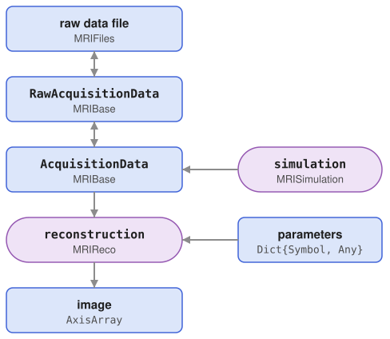
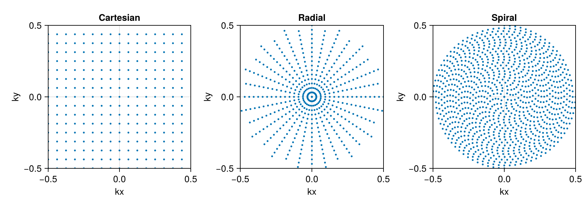
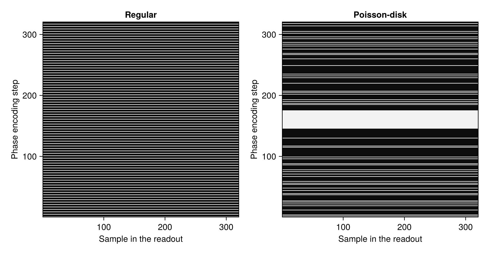

Data Model
MRIReco.jl represents measured MRI data with a few data types, which are defined in MRIBase and shared by all packages of the framework. This page explains what these types contain, how data flows between them and how k-space data and images are laid out.

Raw data is read from a file into a RawAcquisitionData object and converted into an AcquisitionData object, which the reconstruction function turns into an image. AcquisitionData can also be created by simulation. In the diagram, functions are drawn with round ends, and arrows with two heads mark conversions that work in both directions.
The examples on this page use one slice of a knee dataset from mridata.org, which belongs to the documentation data of MRIReco.jl and is downloaded from Zenodo on first use.
using MRIReco, MRIFiles
using Pkg.Artifacts
artifacts = joinpath(pkgdir(MRIReco), "docs", "Artifacts.toml")
datadir = ensure_artifact_installed("MRIRecoDocsData", artifacts; io = devnull)
filename = joinpath(datadir, "knee_3dFSE_slice170.h5")Raw Data
RawAcquisitionData closely follows the ISMRMRD format, an open standard for MRI raw data. It has two fields: params, a dictionary with the information from the XML header of an ISMRMRD file, and profiles, a vector with one Profile for each readout. MRIFiles reads ISMRMRD files and data from Bruker scanners into this type and writes it to ISMRMRD files. Data from other vendors can be converted into ISMRMRD files with the converters of the ISMRMRD project, such as siemens_to_ismrmrd.
rawData = RawAcquisitionData(ISMRMRDFile(filename))The XML header is nested, but params stores it flattened, so that each parameter can be accessed directly. The matrix size of the encoded k-space, for example, is stored in the header under encoding/encodedSpace/matrixSize and is available as
rawData.params["encodedSize"]3-element Vector{Int64}:
320
320
1Each profile holds the samples of one readout. For non-Cartesian acquisitions, its field traj contains their k-space positions. The samples of all coils are stored in its field data, with one row per sample and one column per coil:
profile = rawData.profiles[1]
size(profile.data)(320, 8)The header of a profile, an AcquisitionHeader, describes the readout. Its encoding counters idx give the position of the readout in the acquisition, such as the phase encoding step, the slice, the contrast and the repetition. Like in ISMRMRD, the counters start at zero. The 320 profiles of the knee data cover the phase encoding steps 0 to 319:
extrema(Int(p.head.idx.kspace_encode_step_1) for p in rawData.profiles)(0, 319)The header also contains flags that mark special readouts, for example noise measurements or calibration data. The counters and flags are described in the ISMRMRD documentation.
Preprocessed Data
The profiles in a raw data file are not necessarily stored in the order of the k-space positions, and their layout depends on the sequence. For reconstruction, the data is therefore converted into an AcquisitionData object:
acqData = AcquisitionData(rawData)The conversion groups the profiles by contrast, slice and repetition, averages the profiles that differ only in their average counter, removes samples that the header marks to be discarded and reverses readouts that were acquired in reverse direction. It also creates the sampling trajectory and places each readout in it by its phase encoding counters, so the readouts of one contrast, slice, repetition and average need different counters. All slices, repetitions and averages have to be stored in the same order, and non-Cartesian readouts also in the order of their phase encoding counters. The other counters, such as phase and set, are not used (#246).
For non-Cartesian acquisitions that do not meet these conditions, for example because their counters do not give the position of a readout in k-space, params["trajectory"] has to be set to "custom". The conversion then takes the k-space positions from the field traj of the profiles, in the order in which they are stored, which currently works only for data with one slice, repetition and average (#331).
Special readouts, such as noise measurements, are not filtered out and have to be removed before the conversion with remove_raw_by_flags. The conversion works in the other direction as well: RawAcquisitionData(::AcquisitionData) creates raw data, for example from simulated data.
AcquisitionData is defined as
mutable struct AcquisitionData{T <: AbstractFloat, D}
sequenceInfo::Dict{Symbol,Any}
traj::Vector{Trajectory{T}}
kdata::Array{Matrix{Complex{T}},3}
subsampleIndices::Vector{Vector{Int64}}
encodingSize::NTuple{D, Int64}
fov::NTuple{3,Float64}
endwhere T is the floating point precision and D the number of encoding dimensions, 2 or 3:
typeof(acqData)AcquisitionData{Float32, 2}The k-space data kdata is an array of matrices. Its three dimensions are the contrasts (or echoes), the slices and the repetitions. Each matrix holds the data of one contrast, slice and repetition, with one row per k-space sample and one column per coil:
size(acqData.kdata), size(acqData.kdata[1])((1, 1, 1), (102400, 8))The knee data has one contrast, slice and repetition, and 320 × 320 = 102400 samples from 8 coils. In 3D data, the samples of all partitions are stored in one matrix, as a single slice. The functions numContrasts, numSlices, numRepetitions and numChannels return these sizes.
sequenceInfo can store additional information on the pulse sequence and is empty for the knee data. encodingSize is the size of the image grid that the data encodes, and the reconstruction uses it as the default image size. It is needed in particular for non-Cartesian trajectories, where the grid size cannot be derived from the trajectory. fov is the size of the encoded field of view in millimeters. It always has three entries, which are zero for data without this information, such as simulated data. For this knee slice, which was taken from a 3D acquisition, the third entry is the extent of the 3D volume in the third dimension:
acqData.encodingSize, acqData.fov((320, 320), (160.0, 160.0, 153.600006))Trajectories and Undersampling
The field traj of AcquisitionData contains one Trajectory for each contrast. Its most important field is nodes, a matrix with the k-space positions of the samples, with one row per dimension and one column per node. The positions are measured in units of the inverse pixel size of the encoding grid, so that a fully sampled grid covers the interval [-0.5, 0.5) in each dimension. The positions in the field traj of raw data are used as they are, so they have to be in these units as well. kspaceNodes returns nodes:
tr = trajectory(acqData, 1)
size(kspaceNodes(tr)), extrema(kspaceNodes(tr))((2, 102400), (-0.5f0, 0.496875f0))The knee data was acquired on a Cartesian grid. MRIBase also provides constructors for non-Cartesian trajectories, such as radial and spiral trajectories and, in 3D, kooshball and stack-of-stars trajectories. The following figure compares a Cartesian, a radial and a spiral trajectory:
using CairoMakie
fig = Figure(size = (900, 320))
for (i, (name, numProfiles, numSamples)) in
enumerate([("Cartesian", 16, 16), ("Radial", 16, 32), ("Spiral", 4, 256)])
nodes = kspaceNodes(trajectory(Float64, name, numProfiles, numSamples))
ax = Axis(fig[1, i], title = name, aspect = DataAspect(),
limits = (-0.5, 0.5, -0.5, 0.5), xlabel = "kx", ylabel = "ky")
scatter!(ax, nodes[1, :], nodes[2, :], markersize = 4)
end
fig
For Cartesian data, subsampleIndices contains, for each contrast, the indices of the trajectory nodes at which data was measured, in the order of the rows of kdata. For fully sampled data, these are all nodes. Undersampling, for example with sample_kspace from MRISampling, keeps the trajectory and removes the samples that are not measured from kdata and subsampleIndices. The indices then form a mask on the Cartesian grid. The following figure shows this mask for regular undersampling, as in SENSE, and for Poisson-disk sampling along the phase encoding direction with a fully sampled calibration region, each with a quarter of the profiles:
using MRISampling
acqDataRegular = sample_kspace(acqData, 4.0, "regular")
acqDataPoisson = sample_kspace(acqData, 4.0, "poisson", calsize = 30)
fig = Figure()
for (i, (name, data)) in
enumerate(["Regular" => acqDataRegular, "Poisson-disk" => acqDataPoisson])
mask = zeros(320, 320)
mask[data.subsampleIndices[1]] .= 1
ax = Axis(fig[1, i], title = name, width = 320, height = 320,
xlabel = "Sample in the readout", ylabel = "Phase encoding step")
heatmap!(ax, mask, colormap = :grays)
end
resize_to_layout!(fig)
fig
The reconstruction uses this mask in the encoding operator: after the Fourier transform, a SamplingOp built from subsampleIndices keeps only the measured samples, in the order of the rows of kdata. The operator therefore has one row per measured sample and one column per pixel:
E = encodingOps_simple(acqDataRegular, (320, 320))[1]
length(acqDataRegular.subsampleIndices[1]), size(E)(25600, (25600, 102400))Non-Cartesian reconstructions do not use these indices: the NFFT computes the Fourier transform directly at all nodes of the trajectory. Undersampling such data therefore means using a trajectory with fewer nodes. For data from sample_kspace, convertUndersampledData creates this trajectory.
Since traj and subsampleIndices have one entry per contrast, the trajectory and the undersampling pattern can differ between contrasts, but they are shared by all slices and repetitions.
Images
The reconstruction returns the image as an AxisArray from AxisArrays.jl, an array whose dimensions have names and coordinates. It always has six dimensions. Their names and coordinates can be read with the functions of AxisArrays.jl, which has to be added to the environment to be loaded:
params = Dict{Symbol, Any}()
params[:reco] = "direct"
params[:reconSize] = (320, 320)
image = reconstruction(acqData, params)
using AxisArrays
axisnames(image)(:x, :y, :z, :echos, :coils, :repetitions)The first three dimensions are spatial, and for 2D data the slices are stored along z. The fourth dimension, echos, holds the contrasts, or the basis coefficients of a subspace reconstruction. The fifth dimension holds the coils and the sixth the repetitions. The direct reconstruction used here reconstructs each coil separately, so the coil dimension has length 8. Reconstructions that combine the coils with coil sensitivities return a single image in this dimension. The spatial axes have coordinates in millimeters, computed from fov and encodingSize:
axisvalues(image)[1](0.0:0.5:159.5) mmparent(image) returns the underlying array. MRIReco does not write image files itself; images can be stored with other packages, for example in the NIfTI format with saveImage from ImageUtils.jl.
Array Layouts
The order of the dimensions differs between the data types, which matters when data is passed between them:
| Data | Dimensions |
|---|---|
kdata of AcquisitionData | contrast, slice, repetition; each matrix: sample, coil |
k-space array of kDataCart | x, y, z or slice, coil, contrast, repetition |
| reconstructed image | x, y, z or slice, contrast, coil, repetition |
coil sensitivities of espirit | x, y, z or slice, coil |
A k-space array in the layout of kDataCart can also be converted into AcquisitionData; if its third dimension holds the slices of a 2D acquisition, the keyword enc2D = true is needed. Note that the coil and contrast dimensions are in a different order in k-space arrays and in images:
size(kDataCart(acqData)), size(image)((320, 320, 1, 8, 1, 1), (320, 320, 1, 1, 8, 1))This page was generated using Literate.jl.